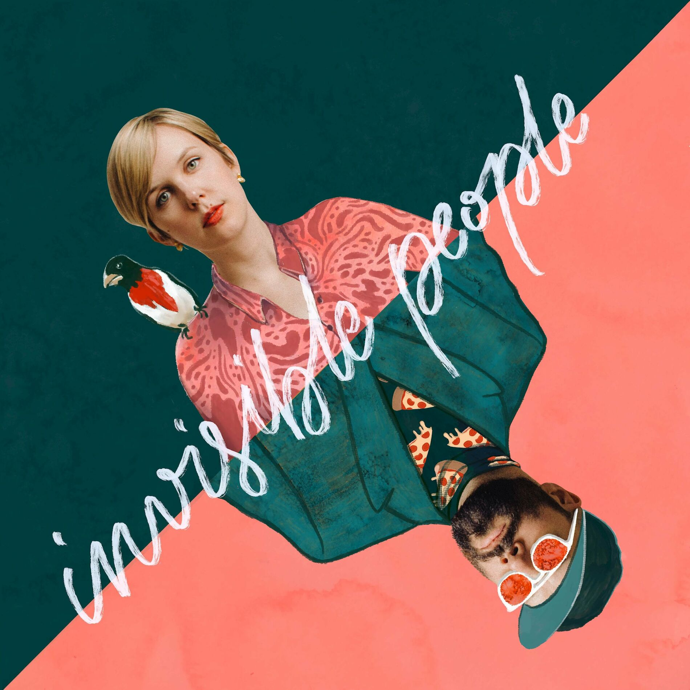
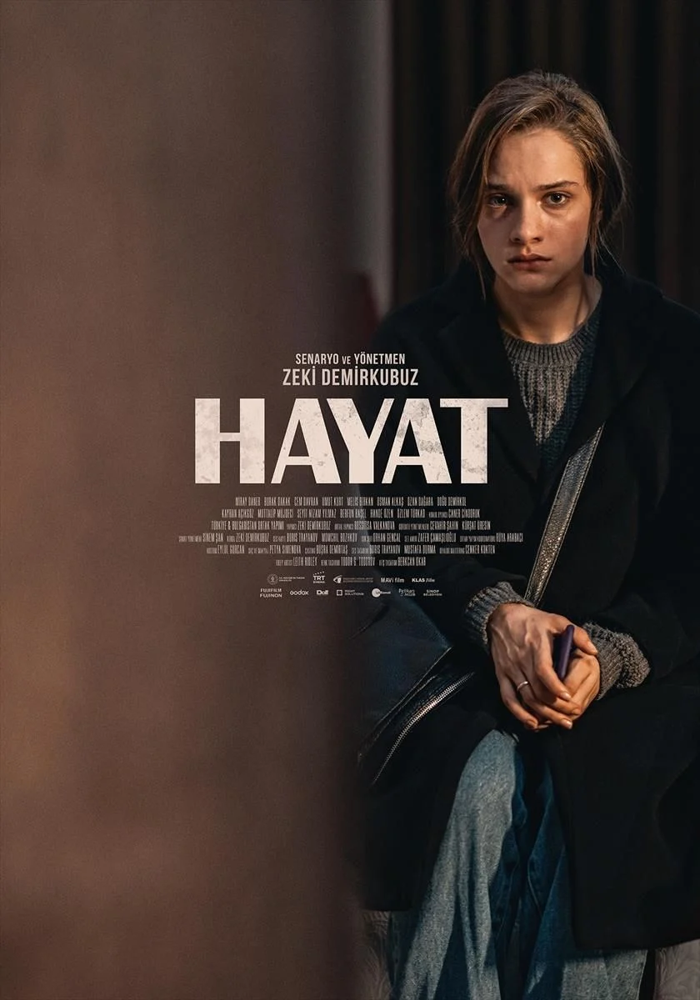

Hayata gözlerimi Hakkari'de açtım, polis memuru bir anne ve asker bir babanın ikinci oğlu olarak dünyaya geldim. Tüm asker çocukları gibi hayatımı türlü türlü şehirlerde iki üç yıl kalarak geçirdim bu sırada pek çok kültür ve insan tanıma fırsatı buldum.
Ortaokul hayatımı en uzun süre yaşadığım yer olan Sungurluda geçirdim. Burada arkadaşlık ve dostluk kavramı hakkında pek çok düşüncemi geliştiren olaylar oldu. Bu süreçte müziğe tutundum ve büyük bir tutkuyla türkçe rock ve fransız müziğine merak saldım.
Playlistlerim

Günümüzde hala filmler çıkarmakta olan Zeki Demirkubuz'un bir hayranı olmamdan başlayan bir süreçle sanat filmlerini tüketmeye ve amatör senaryolar yazmaktayım.
Yazılarım
